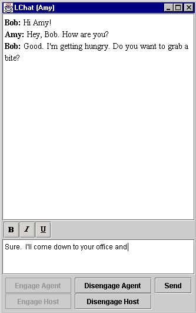

LChat was designed and written to demonstrate the capabilities of Lime. It allows multiple users to communicate through a simple graphical user interface.
examples/Chat directory.
Start the game with the following command which will start the LimeServer and
load an LChat agent into it:
java -classpath .;..\lime.jar;..\lights.jar lime.util.Launcher -load LChat
The documentation for
lime.util.Launcher.
explains the arguments.
You can start Chat on multiple computers with the same command line.
You can also run another Chat program on the same computer (in the same LimeServer) by executing the following command:
java -classpath .;..\lime.jar;..\lights.jar lime.util.Launcher -quit -load LChat
The program will begin by asking you for a user id. This is the name that will identify you to other users. Choose a name and then click OK. The program will then ask "Declare this host as leader?". Answer "yes" on one host. Agents running on other hosts should answer "no".
The Chat program will load its GUI, which will look like the following:
|  | Bold: If this button is depressed, the text you write to the GUI will be bold. If it is not depressed, the text will be normal. | |
| Italic: If this button is depressed, the text you write to the GUI will be italicized. If it is not depressed, the text will be normal. | ||
| Underline: If this button is depressed, the text you write to the GUI will be underlined. If it is not depressed, the text will be normal. | ||
| Disengage Agent: Selecting this button will disengage you from the other agents on this host. | ||
| Engage Agent: Selecting this button will engage you with other agents on your host. Only one of the disengage and engage buttons can be active at once. | ||
| Engage Host: Selecting this button will engage this host with others in the network. This allows agents on this host to communicate with Chat programs running on other hosts. | ||
| Send: This posts the message in the compose area to the screen in the display area. The enter key has the same effect. |
The large white area in the GUI is the display area. This is where your messages to others will appear. They will be intermingled with messages from others. The lower, smaller white area is the compose area. This is where you will compose messages.
LChat's interface with Lime is very simple. When an agent begins, it creates a tuple space called chat. Then, when an agent writes a message, the message is encapsulated as a tuple and placed in the tuple space. This is done by an out of the new message to the tuple space. The tuple for the out consists of the agent ID of the writing agent and an LChatMessage. The LChatMessage holds the text and the text properties of the message. Before writing a new tuple to the tuple space, the agent removes its old message tuple from its tuple space, if there is one. This is accomplished by the use of an inp. The pattern for the inp consists of an actual—the agent's user id, and a formal—LChatMessage.class. Using this inp to remove a tuple before using out to write a new one prevents the number of tuples in the tuple space from continuously growing.
Now we know how tuples get to the tuple space. How are the messages
displayed on the screen? Every agent has registered a ONCEPERTUPLE weak
reaction that reacts to a pattern consisting of two formals—a
String.class and an LChatMessage.class. The
String.class represents any value for the user id, and the
LChatMessage.class represents any value for the message. Upon
reacting to a new message, the reaction does some work on the GUI that causes
the text of the message, with the user id of the writer, to be displayed on
the screen. An agent's reaction reacts to all new tuples, including
that agent's tuples. Thus, all messages, even the ones written locally are
displayed on the screen.
Hosts can only react to tuples in tuple spaces that their tuple spaces are engaged with and are shared. The sharing of the tuple spaces is accomplished by engaging the agent, which is equivalent to setting the tuple space to shared. The engaging of the tuple spaces is accomplished by engaging the host, which makes the tuple space available for operations and reactions from hosts in the network.